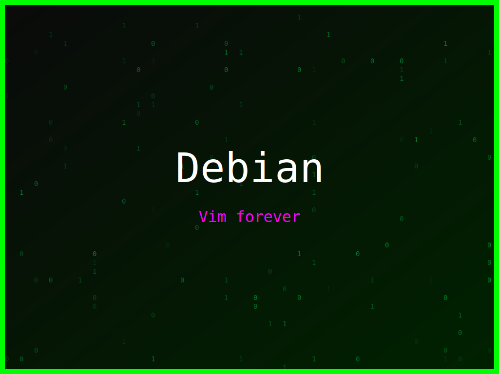

<section class="post-content">

    <div class="details-container">
        
        
        <ul class="details-list">
            <li><strong>Autor:</strong> piolinux</li>
            <li><strong>Descrição:</strong> Design inspirado em bits e bytes para a distro Debian, com uma vibe de código clássico.</li>
            <li><strong>Distro:</strong> Debian</li>
            <li><strong>Frases:</strong> Bits &amp; Bytes, Vim forever, Linux forever</li>
            <li><strong>Tags:</strong> matrix, colorido</li>
        </ul>
        <a href="../galeria.html">Voltar para a galeria</a>||
        <a href="../wallpaper5.svg" download="wallpaper-debian-bits-bytes-e-liberdade.svg">Baixar Wallpaper</a>
    </div>
</section>

